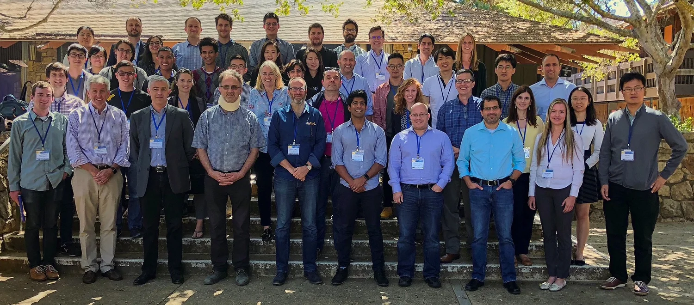
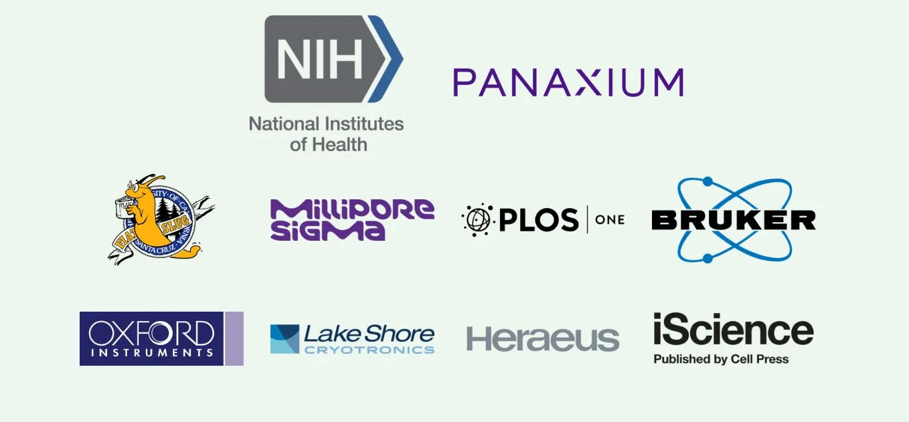

Speakers
Keynote Speaker
John Rogers (Northwestern University)
Invited Speakers
Future Bioelectronics for Optical Stimulation and Sensing:
Diego Ghezzi (École Polytechnique Fédérale de Lausanne), Guglielmo Lanzani (IIT Milan), Markita Landry (UC Berkeley)
Organic Bioelectronics:
Sahika Inal (KAUST), Alberto Salleo (Stanford University)
Bioelectronics and Sensing:
Nader Pourmand (UC Santa Cruz), William Bentley (University of Maryland)
Tissue Engineering and Synthetic Biology:
Laura Poole-Warren (University of New South Wales), Sara Abrahamsson (UC Santa Cruz)
Wearable Bioelectronics
Martin Kaltenbrunner (Linz Institute of Technology), Benjamin C.K. Tee (National University of Singapore)
Novel Materials and Form factors
Tzahi Cohen-Karni (Carnegie Mellon University), Eleni Stavrinidou (Linkoping University)
Microelectrode Arrays
Douglas Weber (University of Pittsburgh), Dustin Tyler (Case Western Reserve), Krishnan Thyagarajan (Palo Alto Research Center (PARC))
Sponsors
